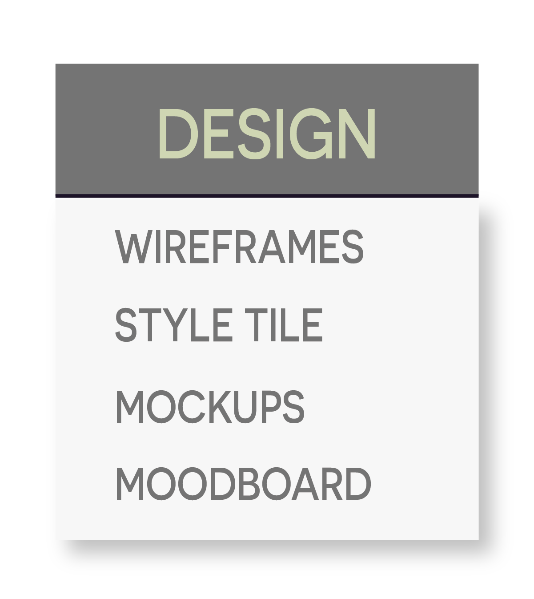
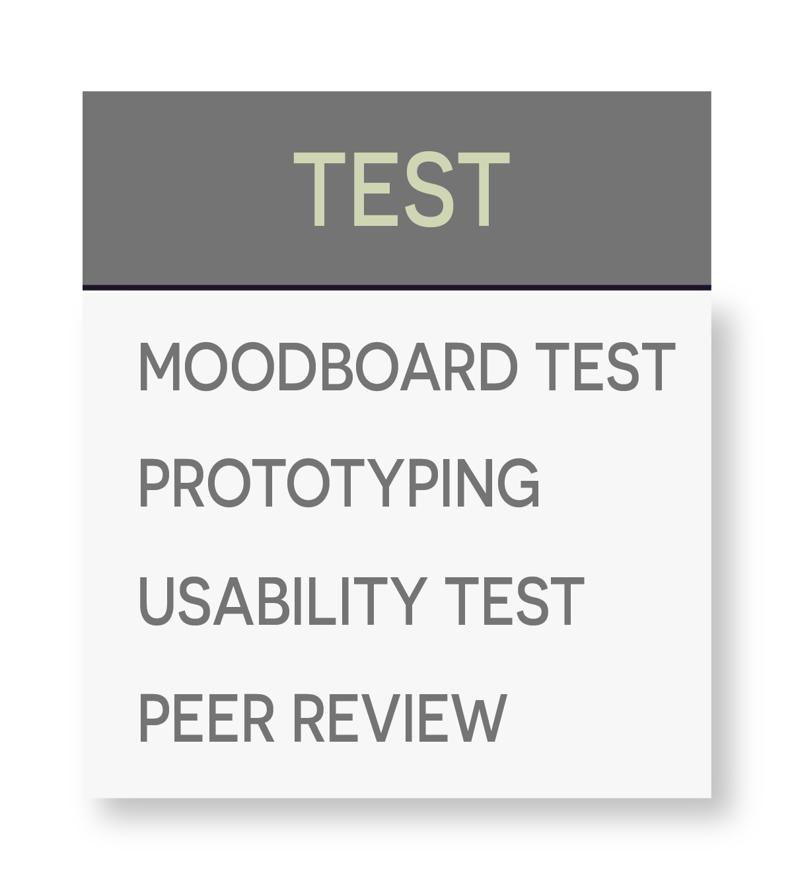
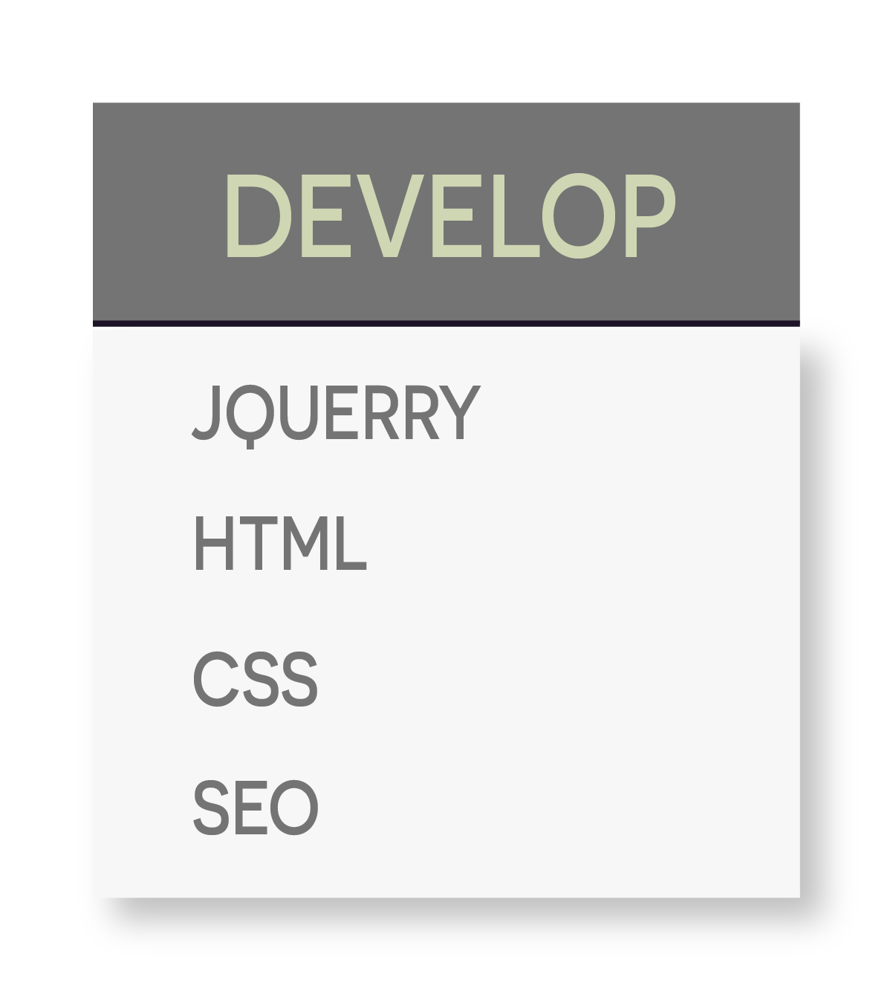

OPEN WEBSITE→
basement
Flying needles tattoo is a tattoo salon in Aarhus. After doing a research, we
found out that they don’t have consistent digital design on web platforms as well as current website
was empty and not updated.
Before creating a website and content, we came up with these questions below:
• What is unique about FNT and what is the tattooing process?
• What information can
make the
users feel
more comfortable and safe about getting a
tattoo and using FNT?
• How can we encourage them trust our client and feel inspired to use
their
services?
• How can we demonstrate this with the content and design for the solution?
3 weeks
Kristine Dzumakajeva, Dan Berger, Gergo Dees, Virag Vajay
HTML, CSS, Jquerry, JS, SoMe strategy
→
→
→
